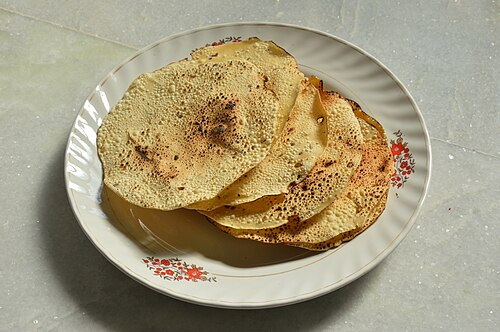
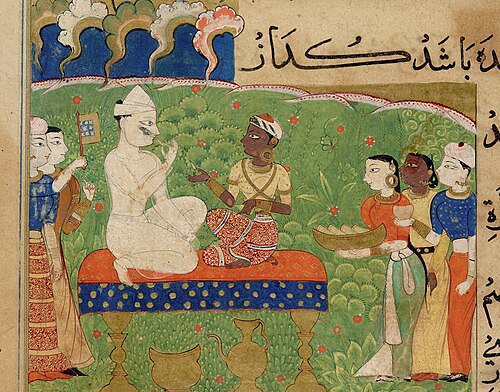
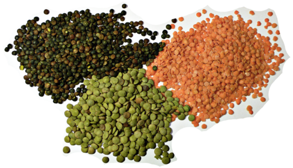

101. papadFile:Roasted Papad - Howrah 2013-11-02 4068.jpg
102. sweet-paanFile:Betel 1.jpg 104. sambarFile:Pumpkin sambar.JPG
104. sambarFile:Pumpkin sambar.JPG
105. plain-dalFile:3 types of lentil.png
101. papadFile:Roasted Papad - Howrah 2013-11-02 4068.jpg
102. sweet-paanFile:Betel 1.jpg104. sambarFile:Pumpkin sambar.JPG
105. plain-dalFile:3 types of lentil.png